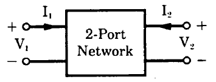
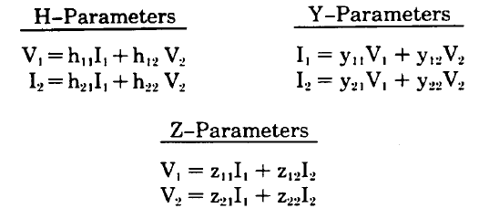
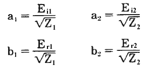
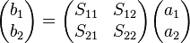
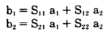
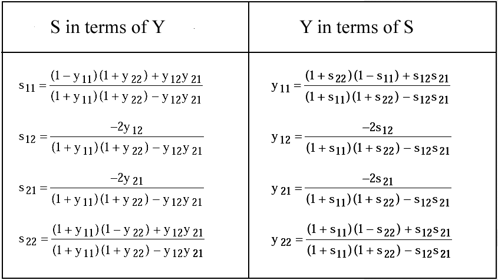
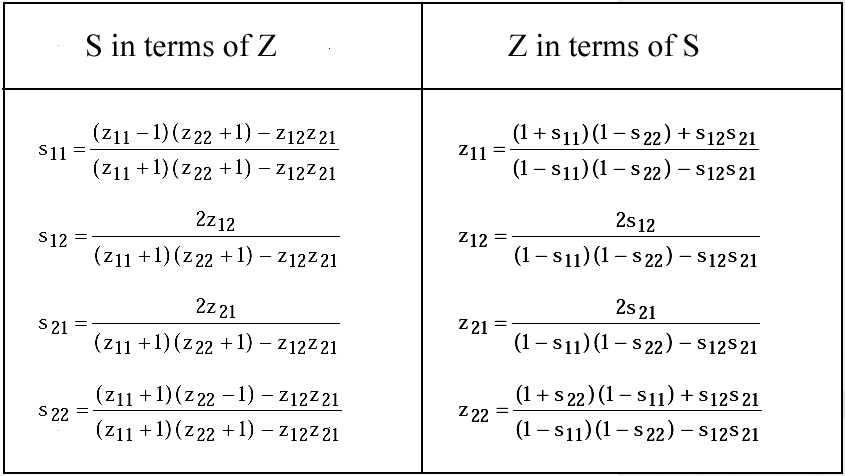
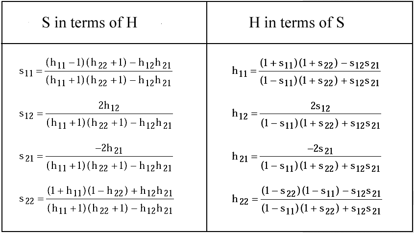

3. 2-port S Parameters
© Jean-Louis Noullet 2013-20173.1 Matrix representation of 2-ports
A two-port is a circuit block with two pairs of terminals, described as a linear system (at least for small signals).Each of these pairs of terminals or ports may work as input or output.
The ports may have a terminal in common.


Each matrix describes entirely the two-port and thus may be expressed in terms of any other one.
3.2 Incident and Reflected Waves
As seen in §1.4, after having chosen a value for the reference impedance Z0, the voltage visible at one port may be considered as the algebraic sum of :- an incident voltage Ei which is the value associated with the maximal power transfer condition
- a reflected voltage Er which is the possible consequence of an impedance mismatch
- a = incident wave
- b = reflected wave


3.3 S parameters
The relations between the waves involved in a 2-port may be expressed by a matrix containing 4 dimensionless coefficients, the S parameters :

The S letter refers to Scattering Parameters, a name which comes from optics, where the crossing of a material boundary causes partial reflexion and light scattering.
Provided that the reference impedance is known, the S matrix describes the system entirely and may be expressed in terms of any one of matrixes H, Y, Z and conversely.
This may be considered as a generalization of the reflexion coefficient, with benefits similar to those explained in §1.4.
- S11 = reflexion coefficient at port 1
- S12 = transmission coefficient from port 2 to port 1
- S21 = transmission coefficient from port 1 to port 2
- S22 = reflexion coefficient at port 2
3.4 Conversion formulas
The following tables give the equivalence between the S parameters and normalized Y, Z, H parameters, which are computed with a reference impedance of 1. When Z0 is different from 1 :- multiply the Z's by Z0
- divide the Y's by Z0
- multiply H11 by Z0
- divide H22 by Z0 


Source: Richard Anderson's reference document, published by Hewlett-Packard AN-95